כושר: לפני ואחרי
כל מסך שעבדתי עליו מאז השחרור האחרון. מימין: מה שיש היום ביציב. משמאל: מה שיעלה בשחרור הבא.
בשחרור הבא ייכנס גם שינוי של הסשן השני: החלפה או הסרה של תרגיל באמצע אימון יכולה להישמר גם בתוכנית הקבועה. הוא לא משנה איך המסכים נראים.
אימון חדש
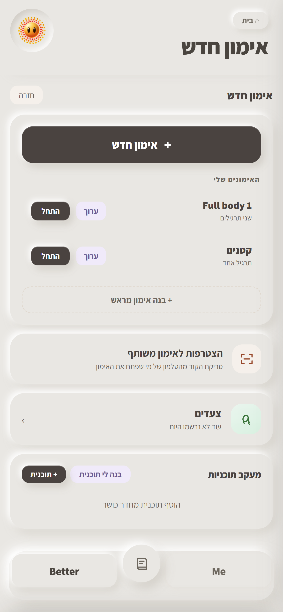
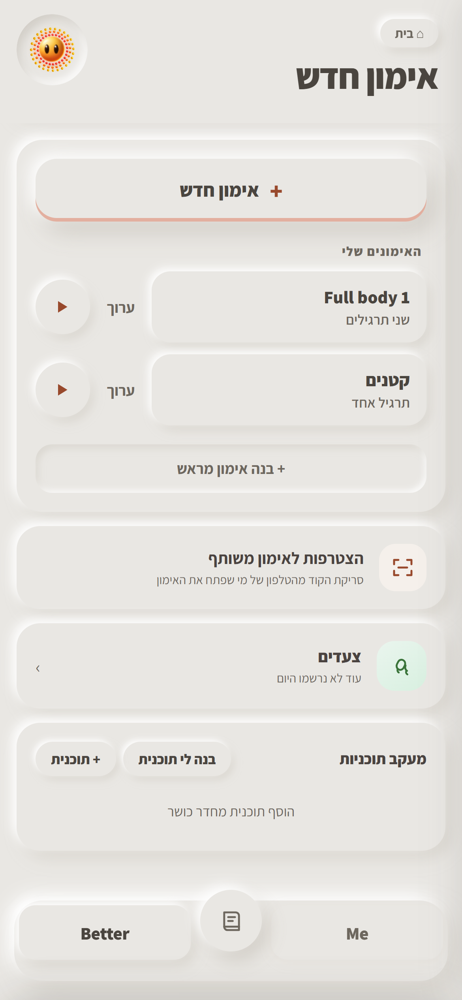
אימון פעיל

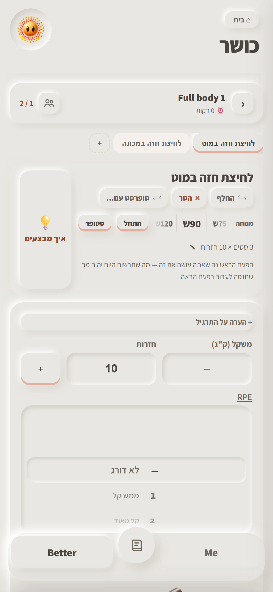
סטופר וטיימרים
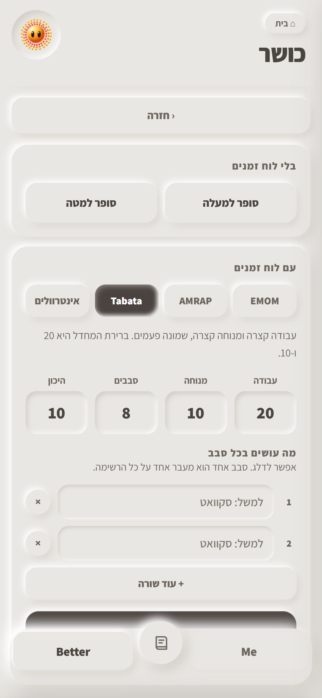
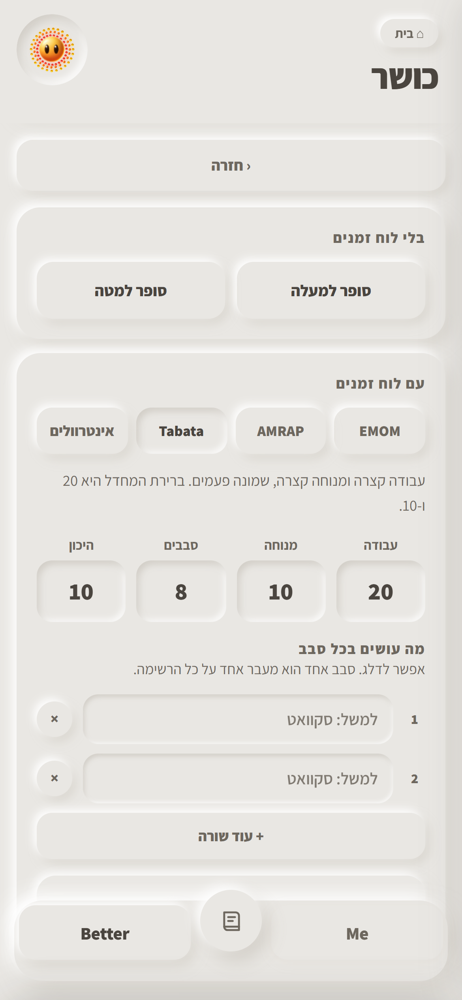
צעדים
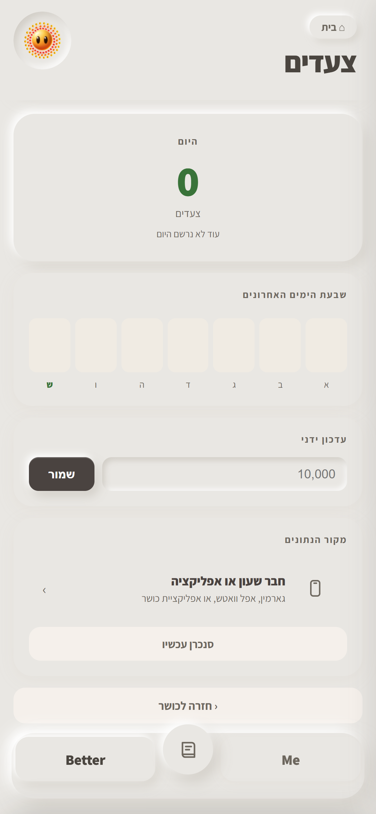
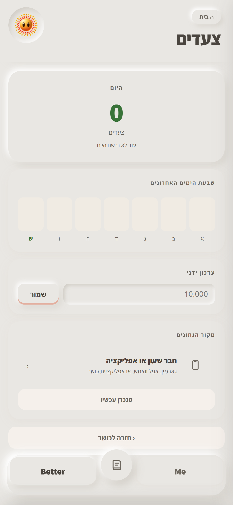
אימון שנבנה לך
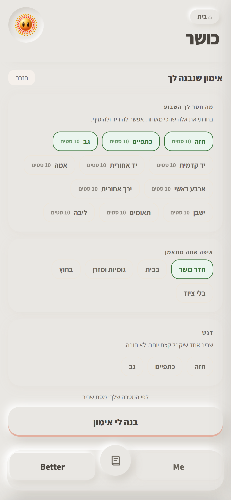
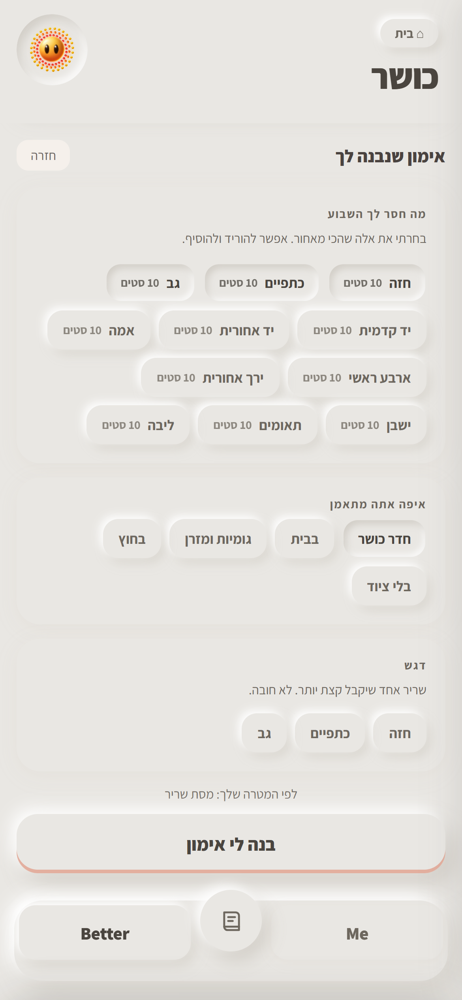
בנה לי תוכנית
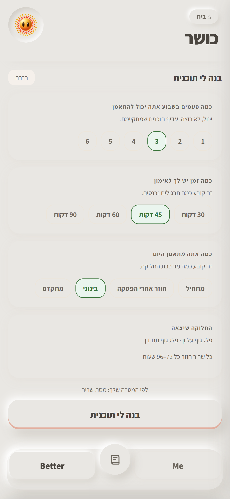
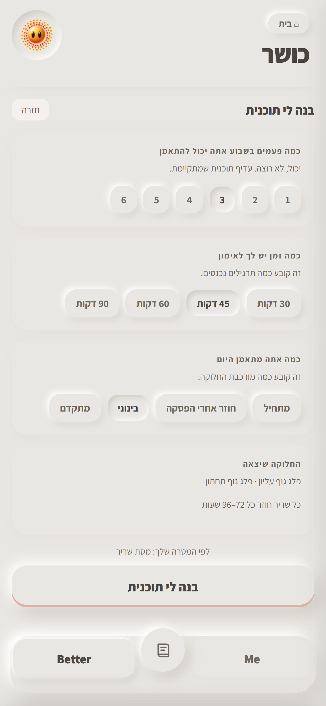